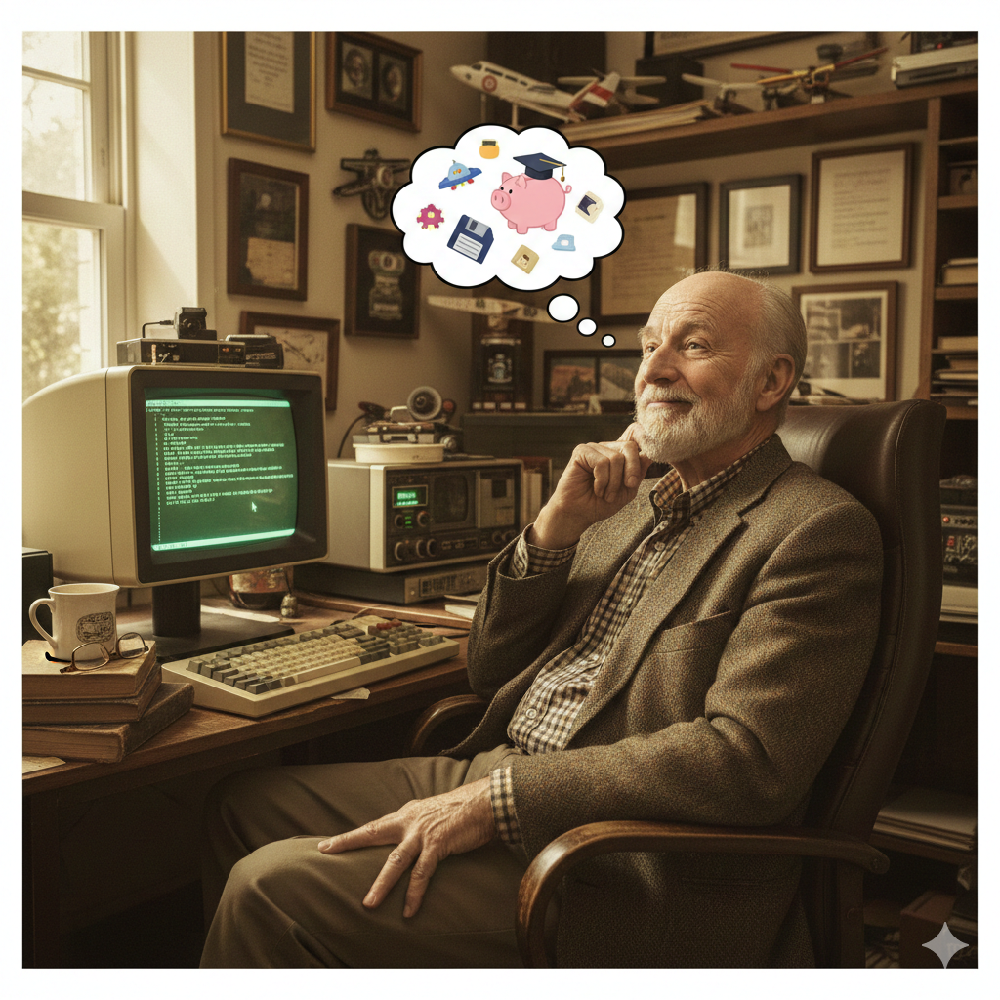

Like everyone in the 70’s I started with BASIC and I guess Machine Code (not really assembler as you had to hand-write the 6502/Z80 op-codes and POKE them into lines in the code)
BASIC did its job perfectly for me back then, that job was to get me interested in computer programming, and I do believe modern BASIC languages have there place, it’s just they were not there in the early eighties when I needed them, and I eventually moved on.

My second language was Turbo Pascal 1.0 on the IBM XT/DOS, this more than anything made me realise I could literally do anything on the machine at amazing speed. I solved all sorts of complicated problems building everything from 8031 assemblers to a complete satellite communications-centre monitoring system, none had performance issues despite being limited to a 4.7Mhz 8088. I also wrote simple CGA games, and as a side note I remember about 15 years ago finding an old 32KB file called space.com, which when I ran on FreeDOS simply flashed the screen and went back to the DOS prompt. After scratching my head for several minutes I found a way to tweak the clock speed down and saw it come up with the opening screen of the pascal space invaders game I wrote; It played the demo game to the end (while waiting for input), and when the demo finished closed the program, all in under a second.
I still love and use Pascal in the form of Delphi and Lazarus/FreePascal, in fact the last two production systems I wrote controlled the whole MRP/ERP environments for large companies for 16+ years without any incidents, and the only red flags the auditors could ever point to were 1. Obsolete technology (fuck off Deloitte’s!) and 2. Single-man risk, which I guess they had a genuine point with.
As I mentioned, one of my first Turbo Pascal programs was an 8031 assembler, as, being an electronics engineer I was primarily designing with microcontrollers. Tools in the 80’s were expensive, all of the microcontrollers I worked with then used C and UNIX for the compiler, so I reluctantly also learned C. I have always had a love/hate relationship with C, I loved the fact I had so much control over the hardware, in (mostly bad) ways that Pascal would almost never let you get away with, but I hated how it came with the double-edged sword of readability, horrible header files, and slower and slower compile/link times even as the hardware improved.
But in 1989 there was a missing component in my programming war-chest, one I had been compensating for unknowingly by writing and incorporating it myself into most large programs I wrote; A database. My exposure to IBM DB2 and SQL was, like C, forced upon me by my job. It turned out management and colleagues did not like their data stored on disk in a proprietary file structure and so I was put on an SQL course. SQL was an eye-opener, and of course gave me access to such things as other-peoples tables, so I no longer needed to store things like names and addresses I could use the account table in the common database and everyone could write reports on my data. SQL filled the gap that Pascal had on the top of the stack, C filled the gap at the bottom, and by the mid-90’s I was in programming nirvana.
It is now the end of 2025 and these are still the three primary languages I develop in, as they do everything me and my clients wanted. I get frustrated in all three, but I work around the frustration, and the FUD, and get straight back into using them to make things.
There is a really big downside to not upskilling to the latest language every decade or so, and that is it drastically lowers your desirability to employers in the market. You have to balance that however with a big upside, and that is when you have been using something for ten or more years, you know its faults, and exactly what it is capable of. I can totally understand why people move with the current trends, you do need to follow the money while you can; However, and if you are realistic with yourself, it is almost 2026 and really only a matter of time before AI papers over all those little cracks it currently has, and truly delivers on the promise of vibe-coding. So the question now becomes, do you really want to learn that new language and become a newbie again at this late a stage?
Its a rhetorical question, I don’t expect you to have an answer, and to do what is right for you at the time, but as a thought it is interesting to ponder.
I doubt any of this will matter much for me, as although I have always been able to produce the same results the big boys could with their state-of-the-art stacks, no company is realistically going to ask me to write their new MRP system in 2025 in Pascal! Still, my other two programming skills are still trendy, so I guess I should be able to cruise into retirement sunset on the coat-tails of SQL or C – Though, and if I am honest, with only 35 years of C under my belt I still consider myself to be a newbie!
Posted to Hacker News here, I do read the comments (eventually!)